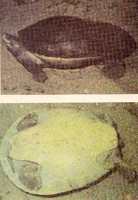

|
Digitized
Inventory of Animal Resources: Reptilia |
Batagar baska
Taxonomic
Details
----- Scientific Name
----- Classification
----- Synonyms
----- Common Names
Other
Biological Details
----- Habit and
Habitat
----- Distribution
---------- Extend of
Occurrence
---------- Area of
occurrence
---------- Altitude
---------- Population
-----
Conservation Status
-----
Diagnostic
Features
-----
Breeding system
Miscellaneous
Information
Literature
Scientific Name :
Batagur baska ( Gray 1831 )
Family :
Emydidae
Classification:
Family : Emydidae
Genus : Batagur Gray 1855
Batagur baska ( Gray 1831 )
Synonyms:
Common Names:
Batagur
River Terrapin
Usually occurs in fresh, brackish and occasionally in marine waters. In freshwater, usually found in canals, lakes usually found in muddy tidal regions at the river mouth, lined with mangrove vegetation.
Omnivorous in habit, but prefers vegetarian habit, feeding on stems, leaves and fruits of river side plants. Also feeds on mollusks, crustaceans and fishes.
Found in Sumatra, Malaysia, Thailand, Bangladesh, Myanmar. In India distributed in Sunderbans of West Bengal.
Extend of Occurrence
Found
in Sumatra, Malaysia, Thailand, Bangladesh, Myanmar.
Area of occurrence:
In India distributed in Sunderbans of West Bengal.
Altitude:
Doesnot arise
Population: Population
declining, number difficult to assess, Restricted to few rivers in Sunderbans
recently, though a wide spread in all the rivers of West Bengal earlier.
Conservation status:
Large scale exploitation for
its meat and eggs results in the endangered condition.
Extensively exploited in Calcutta during mid nineteenth century for its
fat utilized in the manufacture of soap.
Eggs are considered delicacy.
Appendix – I of CITES.
Size : Moderately large, aquatic species of terrapin, reaching 61 cm in length, grown up adults weigh 18 kg.
Body : Head comparatively small with an upturned small, pointed strongly projecting snout. The skin of the posterior portion of the head is divided into small shields. Skull characterized by a bony temporal arch. Upper jaw provided with a notch in the middle.
Limbs : Limbs are with narrow transversely enlarged scales, digits fully webbed and are provided with four claws.
Tail : Tail is extremely short
Carapace : Smooth, shining subtruncated anteriorly, rounded posteriorly, heavy and moderately depressed, in the young an interrupted keel present, which gradually reduces in the fully mature adult. Vertebral shields are 5 in number, second and third is sub equal, fourth is smaller, costal shields are 4 on each side, marginal shields are generally 25, rarely 26. Plastron is smaller than the shell opening, laterally angulated in the young and rounded in the adult, truncated anteriorly, notched posteriorly.
Colouration
: Shell is uniformly
brown, olive brown or greenish; head and the under surface of the neck are
brown. Males assumes brilliant
colouration during breeding season, nostrils become pale blue, iris from yellow
cream to white, head deep black, neck and front limbs deep crimson black.
Hind part remains dull reddish purple, eyes yellowish throughout its
life.
Nesting : Mating takes place during September and November. Males assumes brilliant colouration. Prefers to nest in a colony on large sandy banks with slopes and also on river islands. Nesting is usually site specific, and are extremely sensitive to any disturbance. Female dig nesting site to a depth of 15 – 30 cm, 50 – 60 oblong eggs are deposited in egg chamber, clutch size 10 – 30 eggs. Incubation period is 80 – 100 days. During egg laying produces a drumming sound by the female and is called ‘tutong’ meaning drumming in Malaysia
Miscellaneous Information Threat
Eggs and hatchlings are devoured by otters, dogs, salt water crocodiles, sharks, monitor lizards and man. Habitat destruction by mining in the nesting sites, removal of riverside sand, erosion, construction of barrages and dams, increased streamer activity in the river and brackish water areas and urbanization along river banks.
